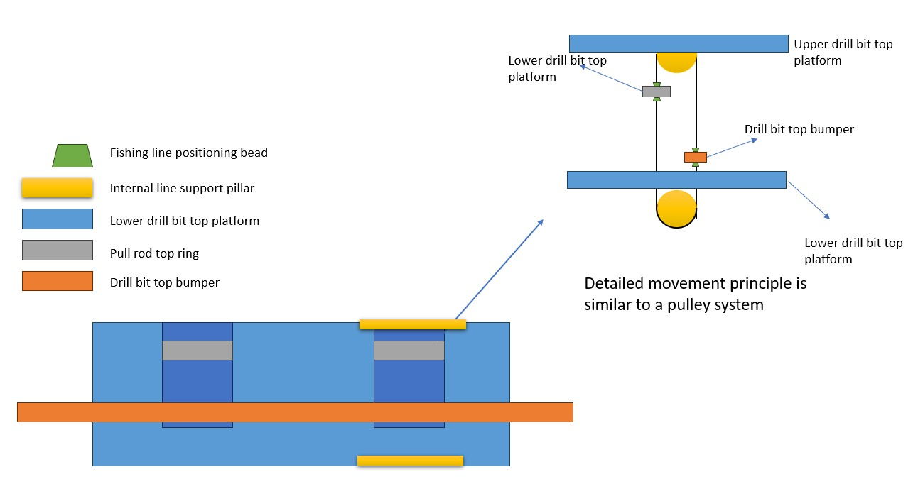

SJTU Student Innovation Practice Program (IPP28037) · Team Lead · Oct. 2023 – Sep. 2024
Shanghai, China · Tengger Desert, Gansu
How can we replant a desert without people on site?
Saxaul trees are critical for combating desertification in northwestern China — they anchor soil and support the cultivation of Cistanche, a high-value medicinal crop. However, harsh desert conditions (sandstorms, wild rabbits, gerbil damage) result in low survival rates. This project designed an autonomous solar-powered trolley that patrols a planting base, replants seedlings, and returns to charge automatically — enabling unattended, scalable reforestation.
The vehicle integrates three core subsystems on a sand-ready chassis:

We field-tested the prototype in the Tengger Desert in Gansu during winter break. We identified and resolved drill penetration issues by adding a ball screw, widening the thread profile, and upgrading to a higher-torque stepper motor. FEA in SolidWorks SimulationXpress confirmed the drill’s structural safety factor exceeded 1.19×106. The final prototype completed the full planting cycle: seedling dispensing, upright transport, drill descent, tip opening, seedling deposit, and drill retraction.
Top 1% Investment Award — Tencent ‘Light’ Technology Charity Creation Camp